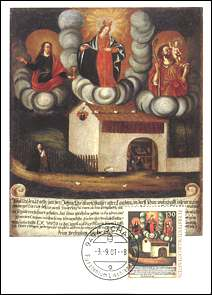
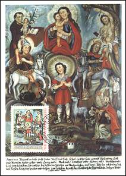
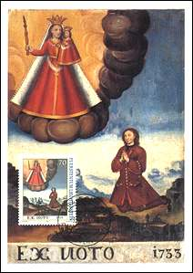
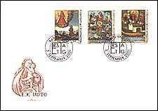
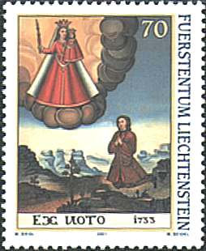
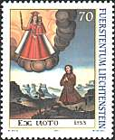
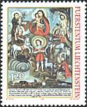
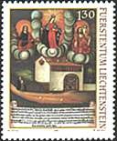

From Liechtenstein
Ex voto is the name given to a votive offering of picture which was presented in connection with a vow. It can take the form of an actual graphic representation or a symbolic reference to the reason for the vow. In an apparently hopeless situation the devout person appeals to God or a holy intermediary for help. In return he promises to make a pilgrimage to a particular place or a donation as testimony. If his appeal is granted, then the petitioner, also known as the votant, must keep his promise. The vow which, until then, has been a private matter is then made public by being read out to the faithful from the pulpit or by hanging up an ex voto. The custom of votive offerings therefore forms part of the legal province of religion since it represents the public announcement of a legally binding between man and God. The votant also faces the fear of being returning to his hopeless situation if he does not keep his promise.
 |
 |
The three votive pictures featured on Liechtenstein's 3rd September 2001 stamps issue date from the early 18th century. The votive picture on the 70 Rp. stamp comes from the Chapel of Our Lady at Dux in Schaan and represents a popular type of anonymous ex voto picture. The picture, which dates from 1733, features Mary as the Queen of heaven, top left, with the child Jesus. The donor of the ex voto kneels with folded hands below her to the right. The reason of this ex voto picture (illness, accident, etc.) is not known.
 |
 |
 |
The picture of the Fr. 1.30 stamp also originates from Dux Chapel. Johann Christoph Walser, former mayor, who was injured on 10th October 1718, kneels in prayer on the road passing in front of the wooden fence to the left of the Torkel building. A large semi-circular arched opening in the Torkel house shows the dreadful fall with the victim lying on the ground, the ex voto vow and his gratitude at surviving the accident. The Fr. 1.20 stamp presents a votive picture dating from 1802, from St. George's Chapel in Schellenberg. It was donated to the commune of Schellenberg in gratitude at withstanding a terrible epidemic which struck the cattle and horses.
 |
 |
 |
All votive pictures are an expression of religious folk art and are mainly
found in pilgrimage churches and chapels. Event today they make a strong
impression of the visitors.
Marianne Siegl designed the three stamps featuring votive
pictures. The work of the engraver Wolfgang Seidel is magnificent, especially
for the 70 Rp. stamp. For this reason it is shown above also enlarged, but
even so the scan doesn't reproduce the finesse of colors and the bold relief
of this wonderful engraving. Printing was done by the Austrian State Printing
House in Vienna.
After: Briefmarken aus dem Fürstentum Liechtenstein.